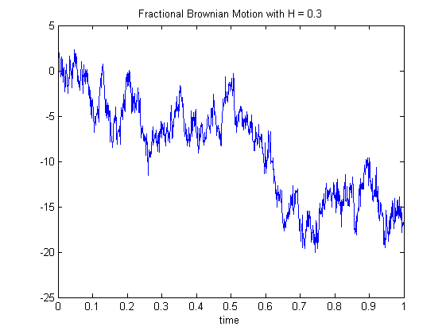
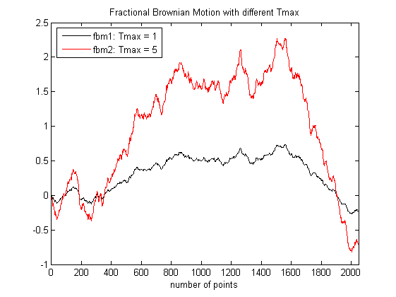

| FRACLAB Functions |
|
Generates a Fractional Brownian Motion (fBm) using Cholesky/Levinson factorization
FBM = fbmlevinson(N,H)
FBM = fbmlevinson(...,'Propertyname',Propertyvalue)
FBM = fbmlevinson(N,H) Generates the fractional brownian motion, FBM, using a sample size, N, and a Holder exponent, H. The parameter N is a positive integer and the parameter H is a real value in (0:1) that governs both the pointwise regularity and the shape around 0 of the power spectrum.
FBM = fbmlevinson(...,'Propertyname',Propertyvalue) Generates the fractional brownian motion, FBM, applying the specified property settings. The property setting can be choosen from the list below :
| Property | Purpose |
|---|---|
| 'support' |
The FBM is computed using a specific size of time support, TMAX. The parameter TMAX
is a positive integer. |
| 'sigma' |
The FBM is computed using a specific standard deviation, S, at instant t = 1. |
| 'seed' |
The FBM is computed with a specific random seed, SEED. This is useful to generate the same path several times or to compare the paths of different FBMs. |
N = 1024; H = 0.3; t = linspace(0,1,N);
fbm = fbmlevinson(N,H);
figure; plot(t,fbm);
title('Fractional Brownian Motion with H = 0.3'); xlabel('time')

N = 2048; H = 0.7;
fbm1 = fbmlevinson(N,H,'support',1,'seed',100);
fbm2 = fbmlevinson(N,H,'support',5,'seed',100);
figure; plot(fbm1,'k'); hold on; plot(fbm2,'r');
legend('fbm1: Tmax = 1','fbm2: Tmax = 5','Location','NorthWest');
title('Fractional Brownian Motion with different Tmax');
xlabel('number of points');xlim([0 N])

fbmwoodchan, mBmQuantifKrigeage, mbmlevinson
[1] N. Levinson "The wiener rms error criterion in filter design and prediction", Journal of Mathematics and Physics, Vol 25 (1947) 261-278.
| |
falphaimage | fbmwoodchan | |